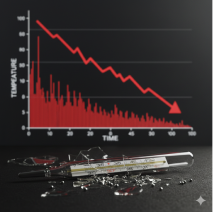

¿Por qué ColdChain?
La cadena de frío es crítica. Sus fallas son costosas.

Pérdidas Económicas
Hasta el 50% de las vacunas se pierden anualmente, costando miles de millones.
Falta de Trazabilidad
Registros manuales propensos a errores que complican las auditorías y la toma de decisiones.

Riesgo para la Salud Pública
Insumos ineficaces ponen en riesgo la seguridad de los pacientes y la confianza.